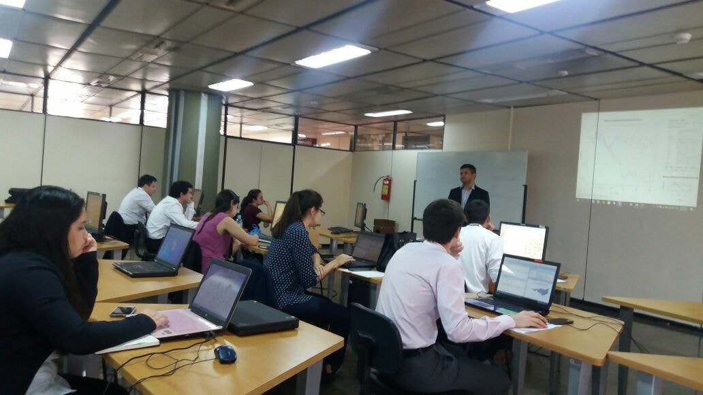
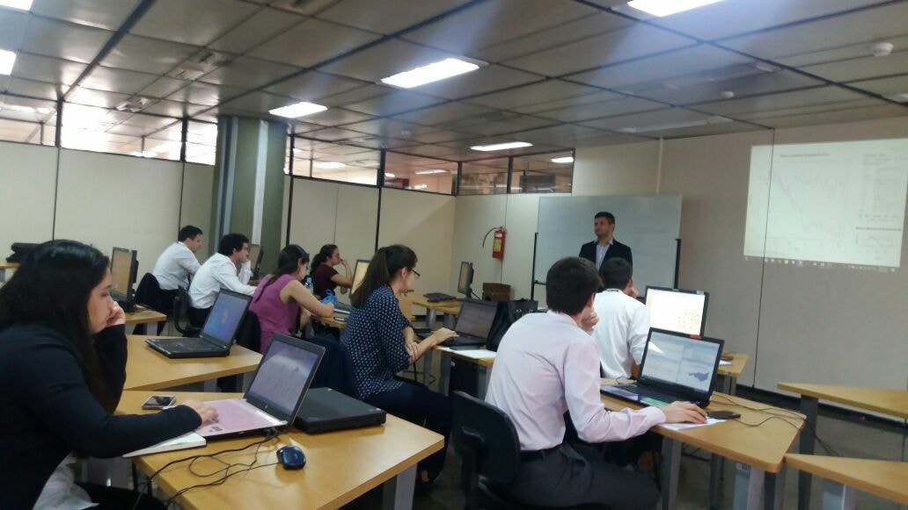

Licenciado en: Matemática Estadística por la Facultad de Ciencias Exactas y Naturales (FACEN - UNA).
Magíster en: Estadística Aplicada por la Universidad de Granada, España (Programa BECAL).
Certificación destacada: Data Science con R - HarvardX (Harvard University).
Profesional con más de 10 años de experiencia en el análisis de datos y en la enseñanza de herramientas de análisis como SQL, Excel, Power BI, R y Python. He tenido el privilegio de capacitar a profesionales en instituciones públicas como el Banco Central del Paraguay (BCP), Itaipú Binacional, DGEEC, MEC, FACEN y el Ministerio de Desarrollo Social, así como en organizaciones privadas como Automotor, Banco Familiar, Bancoop y Sueñolar.
Mi mayor motivación es enseñar. Estoy comprometido en ayudarte a dominar habilidades clave y aplicarlas con seguridad en contextos reales.


 
